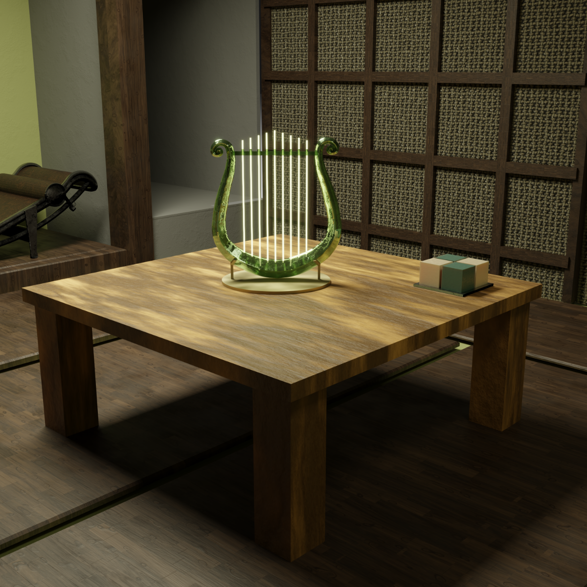
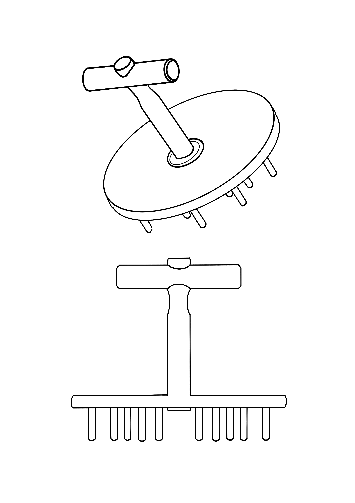

Portfolio / ProgettiBrera, Milano
01 — 04
Selected
works.
Quattro direzioni di ricerca: architettura virtuale, interni, design e scenari futuri. Il portfolio si apre come un libro e raccoglie render, movimento, disegno e sviluppo di concept.
Spazio / oggetto / luce
Materia / immagine / futuro
Modellazione / materiali / animazione
Ulisse
in movimento.
Una lampada-scultura digitale costruita attorno al profilo della lira e raccontata attraverso luce, trasparenza e movimento.
Il modello viene osservato da più punti di vista per verificare ritmo, riflessi e presenza nello spazio. L'animazione diventa parte del progetto: non mostra soltanto l'oggetto, ma il modo in cui cambia quando incontra la luce.
Video di progetto
Blender
2025—2026
Atmosfera / composizione / scala
Spazio
abitato.
Un ambiente di ispirazione giapponese usato per studiare la relazione tra oggetto, materiali e luce.
Legno, superfici filtranti e ombre costruiscono una scena raccolta. L'inserimento dell'oggetto luminoso permette di verificarne la scala e di capire come la sua presenza modifica l'equilibrio dello spazio.
Studio d'interni
Ambiente 3D
Rendering

Product design / utensile / movimento
Orbita
tool-being.
Un rastrello rotante che reinterpreta un utensile tradizionale attraverso una struttura circolare con denti rigidi.
Forma, funzione e gesto vengono ripensati insieme. Il progetto è stato sviluppato all'Accademia di Brera e prototipato con Artwood Academy, fino all'esposizione RAKETOPIA tool-being nel circuito 5VIE durante la Milano Design Week 2026.
Concept + prototipo
Brera × Artwood
2026

Scenario speculativo / paesaggio
Paesaggi
possibili.
Un'architettura immaginata come soglia tra il territorio montano, il giardino e una nuova esperienza dello spazio.
Il progetto esplora coperture abitabili, luce radente e percorsi aperti sul paesaggio. La visualizzazione combina ricerca digitale e immaginazione generativa per rendere leggibile uno scenario ancora in evoluzione.
Visual research
AI + rendering
Scenario futuro